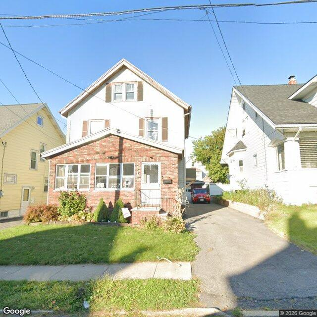

Property entry
252 Hood Ave
Published 2026-10-27T22:04:40+00:00
Parcel key: 005-02-780

City records
Matches use parcel IDs or normalized property addresses. Nearby properties are not treated as matches. Records may include historical or closed cases; check each record's status and dates. Publication dates are not source-data dates.
Vacant properties 0
No matches stored for this feed. The feed or address matching may be incomplete; this is not confirmation that no records exist.
Records refreshed 2026-10-27.
Rental registry 0
No matches stored for this feed. The feed or address matching may be incomplete; this is not confirmation that no records exist.
Records refreshed 2026-10-27.
Code violations 6
- Latitude
- 43.07610813
- Longitude
- -76.14687088
- Neighborhood
- Court-Woodlawn
- ObjectId
- 17152
- SBL
- 005.-02-78.0
- complaint_address
- 252 Hood Ave
- Latitude
- 43.07610813
- Longitude
- -76.14687088
- Neighborhood
- Court-Woodlawn
- ObjectId
- 17155
- SBL
- 005.-02-78.0
- complaint_address
- 252 Hood Ave
- Latitude
- 43.07610813
- Longitude
- -76.14687088
- Neighborhood
- Court-Woodlawn
- ObjectId
- 17156
- SBL
- 005.-02-78.0
- complaint_address
- 252 Hood Ave
- Latitude
- 43.07610813
- Longitude
- -76.14687088
- Neighborhood
- Court-Woodlawn
- ObjectId
- 17158
- SBL
- 005.-02-78.0
- complaint_address
- 252 Hood Ave
Records refreshed 2026-10-27.
Unfit properties 1
- Latitude
- 43.07610813
- Longitude
- -76.14687088
- ObjectId
- 48
- SBL
- 005.-02-78.0
- address
- 252 Hood Ave
- area_involved
- Dinning Room
Records refreshed 2026-10-27.
AI image observations (unverified)
These observations are generated from an image, not an inspection or an official code finding. No human verification is recorded here.
Image capture date: Not recorded. The entry publication date does not establish the age of the image.
Automated image description
{ "summary": "The visible exterior of the property appears to be a two-story residence with a brick first floor and white siding on the upper level, showing some signs of weathering and general wear.", "property_type_guess": "single_family", "visible_conditions": [ "Two-story residential structure with a gable roof.", "Brick facade on the first floor and enclosed porch area.", "White siding on the second floor and gable.", "Asphalt shingle roof appears generally intact.", "Front yard with grass and some foundation plantings.", "Asphalt driveway extends along the right side of the property.", "Metal railing on the front porch steps.", "Some areas of the front lawn appear patchy with some taller grass or weeds.", "Multiple cracks are visible in the asphalt driveway.", "The metal porch railing shows signs of rust and deterioration.", "Some window trim, particularly on the enclosed porch, exhibits possible peeling paint." furlough ], "condition_scores": { "roof": "fair", "siding_or_facade": "fair", "windows_doors": "fair", "porch_or_entry": "fair", "yard_or_lot": "fair", "trash_debris": "none_visible", "vegetation_overgrowth": "minor" }, "visible_flags": { "boarded_windows_or_doors": "no", "fire_damage_visible": "no", "structural_damage_visible": "no", "vacancy_signs_visible": "no", "active_construction_visible": "no" }, "possible_unrecorded_issues": [ "Visible cracks in the asphalt driveway.", "Some areas of the front lawn appear patchy with unmanaged taller grass or weeds.", "Visible rust and deterioration on the metal porch railing.", "Possible peeling paint on some window trim." ], "image_annotations": [ { "label": "Patchy lawn with weeds", "reason": "The front lawn exhibits bare patches and areas of unmanaged taller grass or weeds.", "bbox": { "x": 0.0, "y": 0.55, "width": 0.55, "height": 0.4 }, "confidence": "high" }, { "label": "Cracked asphalt driveway", "reason": "Multiple cracks are visible across the asphalt surface of the driveway.", "bbox": { "x": 0.45, "y": 0.45, "width": 0.55, "height": 0.55 }, "confidence": "high" }, { "label": "Deteriorated porch railing", "reason": "The metal railing on the front porch steps shows visible rust and paint deterioration.", "bbox": { "x": 0.61, "y": 0.62, "width": 0.15, "height": 0.2 }, "confidence": "high" }, { "label": "Peeling paint on window trim", "reason": "Some window trim, particularly on the enclosed porch, exhibits signs of peeling paint.", "bbox": { "x": 0.24, "y": 0.51, "width": 0.1, "height": 0.07 }, "confidence": "medium" } ], "needs_human_review": false, "confidence": "high", "caveats": [] }
Property type guess: unclear
Visible conditions
- No items reported.
Condition scores
No structured condition scores available.
Visible flags
No structured visible flags available.
Possible image-only flags
- No items reported.
AI review boxes
- No items reported.
Review reasons
- No items reported.
Image quality
- Available
- True
- Bytes
- 82730
- Needs Rerun
- False
ACS tract context
Census Tract 4; Onondaga County; New York
- Total population
- 4042
- Median household income
- 66250
- Poverty rate
- 27.6
- Housing units
- 1534
- Vacancy rate
- 4.6
- Renter-occupied share
- 71.7
- Median gross rent
- 130600
OpenStreetMap nearby
60 meter search radius
Nearby map data is temporarily unavailable. This does not mean there are no mapped features.